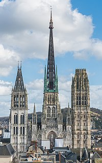
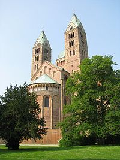
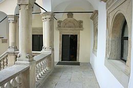
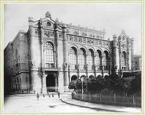

Építészet
Gótika
A gótika az érett középkor művészetének egyik irányzata, de megjelenésének technikai és társadalmi körülményeivel együtt történelmi korszaknak is tekinthető. Észak-Franciaországban a román művészetből fejlődött ki a 12. században, majd egész Nyugat-Európában, valamint Észak-, Dél- és Közép-Európa nagy részén is elterjedt.
Az elnevezést először pejoratív értelemben használták a reneszánsz korban, a sötétnek vélt középkor művészetét illették vele a fényesnek tartott antik művészettel szemben. Az
akkori olaszokban mélyen élt a barbár pusztítások emléke, ezért goticó-nak, barbárnak mondták. Az elnevezést egyébként Giorgio Vasari óta használja a művészettörténet
(csakúgy, mint az antikvitás kifejezést).

Román
Az antikvitás óta a román építészet jelenti az első monumentális stílust. Egész Európában elterjedt, noha a helyi különbségek jelentősek.
Fő feladatának a keresztény templom építését tekintette, ami a legfontosabb művészi feladat, szobrászat, festészet és kézművesség minden erejét ennek a díszítésére fordította. A kor művészetétől távol áll a naturalizmus.
A 11–12. században fellendült az egyházi építkezés, püspöki székesegyházak, katedrálisok, dómok, plébániatemplomok, kolostorok, keresztelőkápolnák, temetőkápolnák és csontházak (karnerek) épültek.
A román templom elrendezése hasonló a római bazilikáéhoz: a szentélyhez vezető főhajó és mellette jobbról-balról egy-egy, néha két-két mellékhajó. Az egyszerű főépülethez néha egész sereg toldalék járul. Van, aki kereszt alakúra egészíti ki az épületet egy kereszthajóval a hosszhajó és a szentély között. A különbség belül még szembetűnőbb: az antik oszlopokat vaskos oszlopok és zömök pillérek váltották fel, a kazettás síkmennyezetet pedig félköríves boltozatok. A masszív falak és zömök tornyok a középkori várakra emlékeztetnek.

Reneszánsz
A reneszánsz, mint tudjuk Itáliában alakult ki, jellemzője a világias, profán légkör. Míg a középkor századaiban az élet értelmét a túlvilági életre való felkészülésben látták, addig a reneszánsz ember a földi életet állította központba: harmóniában akart élni e földi létben és boldog lélekként üdvözülni a túlvilágon. Ez az új humanista világnézet új stílust hívott életre, mintaképévé az élet teljességét tükröző antik (görög és római) művészet vált, ennek újjászületését (reneszánsz) hirdették. Az egyházi mellett hangsúlyos szerepet kapott a világi építészet is. Esztétikai kritérium lett a harmónia, a szimmetria és a tér centrális felfogása, térlefedéseknél a kupola. Tudatos távlati hatásokra törekedtek, felfedezik a perspektívát, a fény és az árnyék játékát. Antik épülettagozatokat újítanak fel: pl. párkány, bábos korlát, ballusztrád. Megjelenik a stukkó (gipszdíszítmény), elsődlegessé válik a belső márványburkolat használata (nálunk elsősorban a sütői vörös márvány, síremléknek is). Jellegzetes a sgrafitto (két vagy több eltérő színt vékony vakolatrétegben hordanak egymásra és így kaparják ki a díszítést), a száraz (secco) és nedves (fresco) vakolatra felhordott falfestés, a pártázatos oromzat. Gyorsan hódít a színes, mázas kályhacsempék, fajansz, majolika divatja.

Romantika
A romantika egységes korstílus, ami több művészeti ágra együttesen terjedt ki. Kialakulásának időszaka a 18. század vége, virágkora a 19. század első fele, a század második felében a késő romantika és a romantikából kiinduló irányzatok voltak jelentősek. A romantika végét szokás Eugène Delacroix halálának időpontjával egyeztetni (19. század második fele).
